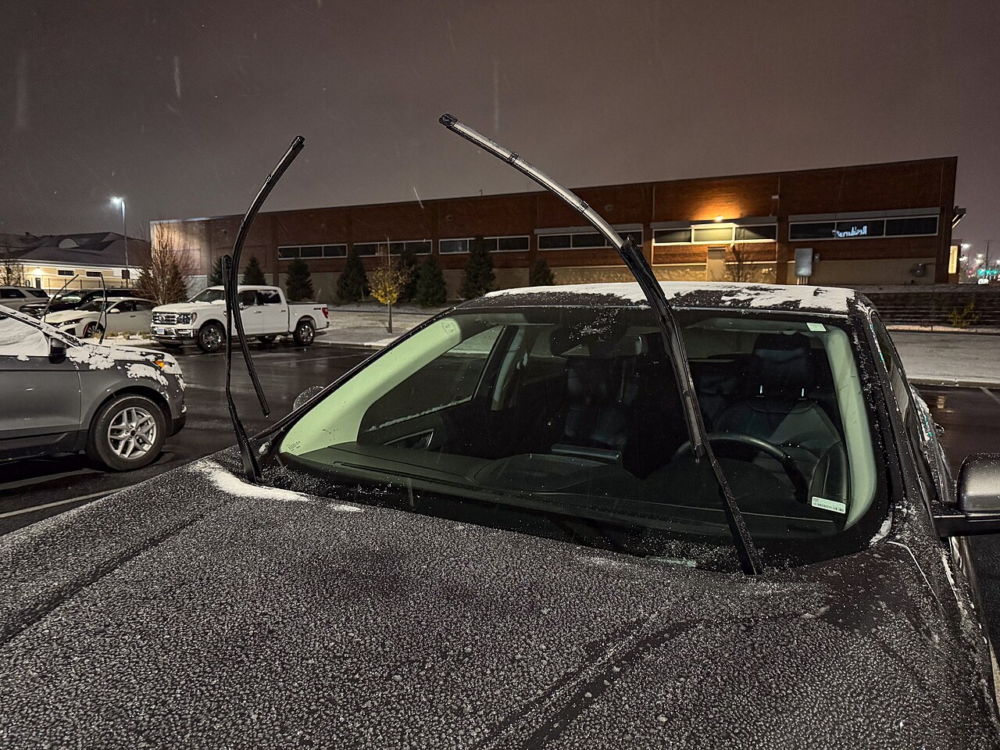

Winter Wiper Blades: When to Change Them and How
If your wipers streak, chatter, or skip, they're done. Winter blades are built differently — and swapping them is a five-minute job.

Photo: Tony Webster, CC BY-SA 2.0, via Wikimedia Commons
.jpg){kind=link}
Your wipers smear more than they clear, they chatter across the glass like a jackhammer, and there's a permanent unwiped stripe right in your line of sight. Most drivers live with that all winter. They shouldn't. Wipers are a safety item, not a convenience — when you can't see, nothing else about winter driving matters. And winter wiper blades are a real thing, built differently from summer blades, for exactly this season.
Why it's wrong
Worn wiper blades don't just annoy you — they leave water, slush, and salt film smeared across the glass at the exact moment you need to see. The rubber edge wears down, hardens in the cold, and tears when it's forced across ice. Regular blades have exposed metal joints that pack with ice and snow, freezing the blade into a rigid shape that can't follow the curve of the windshield — that's the stripe that never gets wiped. And using the wipers to clear heavy snow or ice off the glass tears the rubber and strains the wiper motor. A set of wipers costs less than a tank of gas; driving blind through a snow squall costs far more.
The right way
- Change them in October, before the season. If the blades are more than a year old, or they streak, chatter, skip, or squeak, they're done. Don't wait for the first storm to find out.
- Buy winter blades, not all-season ones. Winter blades have a rubber boot covering the frame, so ice and snow can't pack into the joints and freeze the blade stiff. They also use a heavier rubber that stays flexible in the cold.
- Get the right size for your car. The driver's and passenger's blades are often different lengths. Check your owner's manual or look it up at the parts store — the size is printed on the box.
- Change both at the same time. If one is worn, the other is close behind. A mismatched pair wipes unevenly.
- Install them yourself — it takes five minutes. Lift the wiper arm off the glass, press the release tab, slide the old blade off, slide the new one on until it clicks. No tools needed on most cars.
- Lift the blades off the glass before a freeze. If freezing rain or wet snow is forecast, stand the wipers up away from the windshield so they don't freeze to the glass overnight.
- Never use wipers to clear ice or heavy snow. Scrape and brush first, then let the wipers do what they're made for.
The rundown
New winter blades in October, both sides, right sizes, installed yourself in five minutes. Lift them off the glass before a freeze, and never ask them to chisel ice. Clear glass isn't a luxury in winter — it's the whole game.
← Back to the full winter checklist